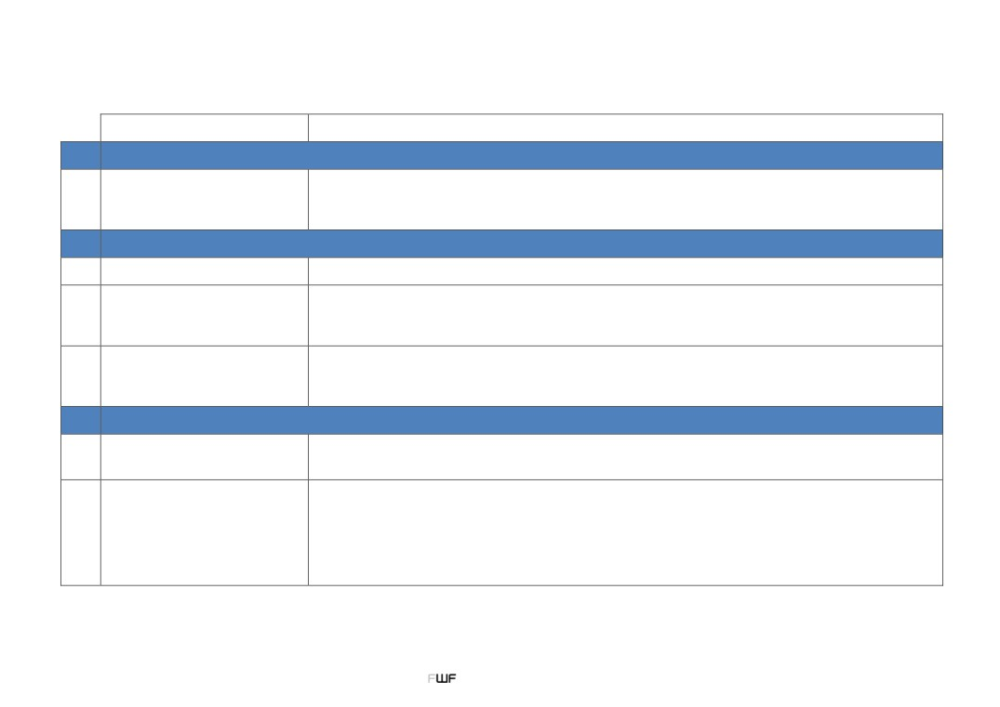
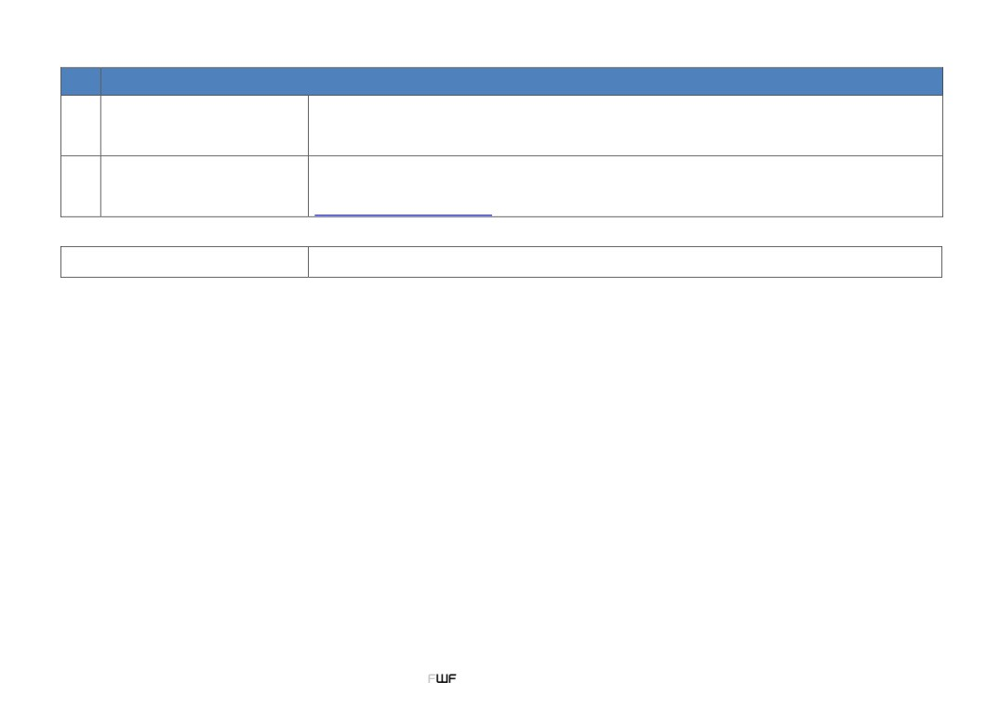

FWF Data Management Plan Template (DMP) - Guide
Data Officer
{{ contact }}
I
Data Characteristics
What kinds of data/source code will be generated or reused (type, format, volume)?
How will the research data be generated and which methods will be used?
I.1
Description of the data
How will you structure the data and handle versioning?
Who is the target audience?
II
Documentation and Metadata
II.1
Metadata standards
What metadata standards (if any) will be in use and why? (see Digital Curation Centre)
What information is needed for the data to be findable, accessible, interoperable and re-usable (FAIR) in
the future?
II.2
Documentation of data
Is the data machine-readable?
How are you planning to document this information?
What quality assurance processes will you adopt?
How will the consistency and quality of data collection be controlled and documented? (This may include
II.3
Data quality control
processes such as repeat samples or measurements, standardised data capture, peer review of data or
representation with controlled vocabularies.)
III
Data Availability and Storage
How and when will the data be shared and made accessible?
III.1
Data sharing strategy
What repository will you be using?
What persistent identifier will be used?
What data are to be preserved for the long-term, and what data will not be stored? How and where will the
data be stored and backed up during the research?
How and where will the data be stored after the project ends?
III.2
Data storage strategy
For how long will the data be stored?
Are there any costs that need to be covered for storage?
At what point during or after the project will the data be stored?
Are there any technical barriers to making the research data fully or partially accessible?
1
DMP Template - Guide (01/2019)

IV
Legal and Ethical Aspects
Are there any legal barriers to making the research data fully or partially accessible?
Who owns the data?
IV.1
Legal aspects
What licence for reuse are you planning to attach to the data?
Are there any restrictions on the re-use of the data? If so, why?
Are there any ethical barriers to making the research data fully or partially accessible?
If applicable, how are you planning to deal with sensitive data during and after the project?
IV.2
Ethical aspects
Consider "Ethics for researchers” published by the European Commission or "The European Code of
Conduct for Research Integrity".
The FWF recognises that some projects will not generate or analyse research data and similar materials. In
No data will be generated or analysed
these cases, a short explanation is required.
DMP Template - Guide (01/2019)
2